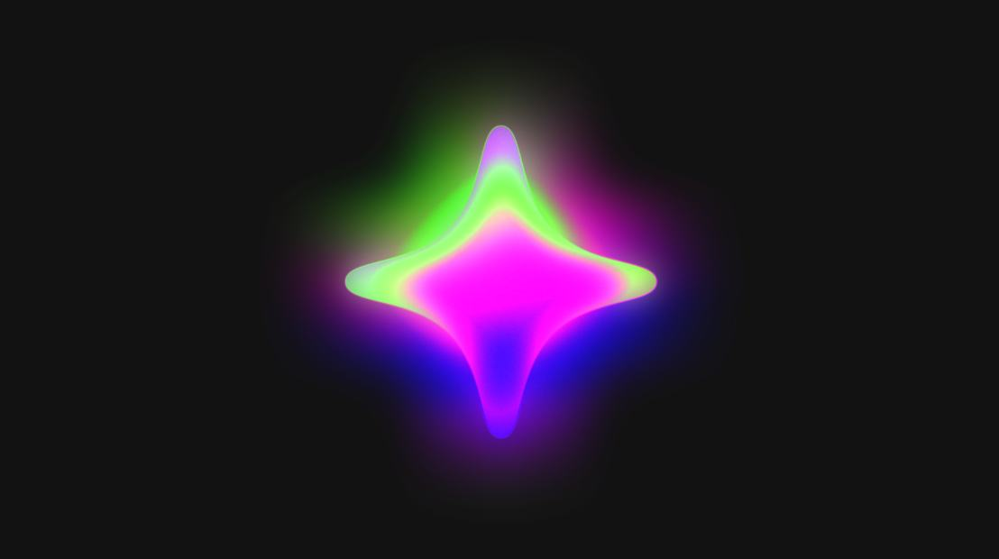
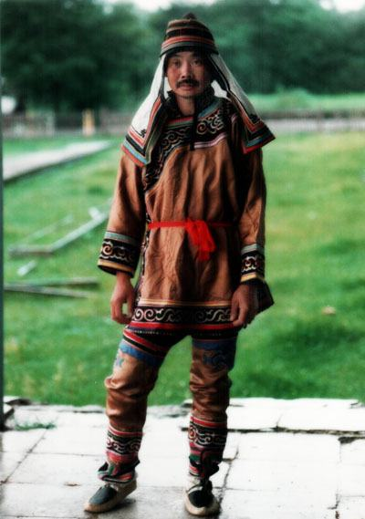
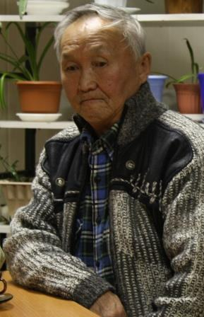
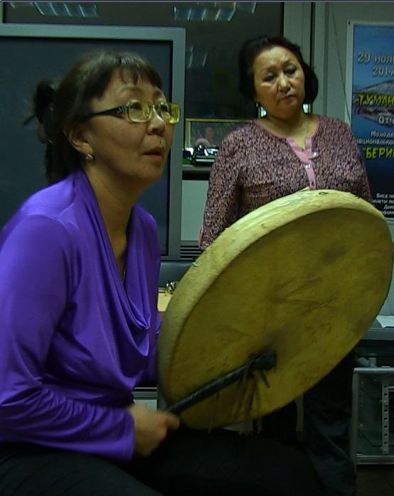

Электронный
фонограммархив
Главная
Исполнители
Жанры
Этносы

Эбэм ырыата (Песня бабушки)
Готовцева Анна Егоровна · 2014
0:00
0:05
▶
1
Эбэм ырыата (Песня бабушки)
Готовцева Анна Егоровна
2
Эбэҥкилии ырыа (Эвенкийская песня)
Готовцева Анна Егоровна
3
Табаны ыҥырыы (Зов оленя)
Николаев Егор Иосифович
4

Морсуо оҕото (Песня о Морсуо)
Коллектив «Дылкэн»
5
Ёхорьё (эвенкийский круговой танец)
Н. Колодезникова и другие
Исполнители
Смотреть всех
→
Гаргульгыргына
Анна Сергеевна
Кимонко
Ингили Батович

Николаев
Егор Иосифович

Тевлянкау
Елена Михайловна
Жанры
Звукоподражание
Песня
Предание
Колыбельная
Сказание
Этносы
Нанайцы
Чукчи
Эвенки
Якуты
(саха)